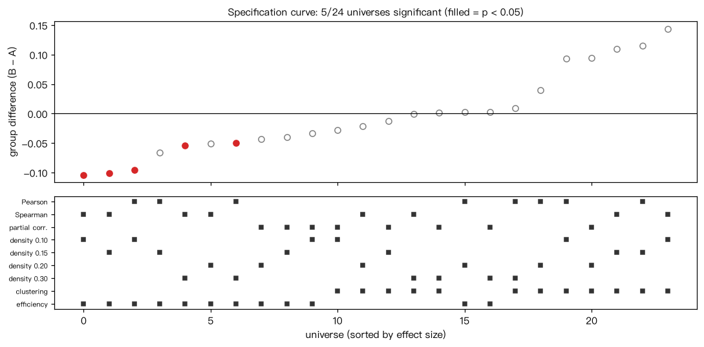

Example04 / 08
多元宇宙分析——把所有合理的网络构建选择组合起来同时报告
模拟两组被试（各 60 人、30 个节点），B 组只在一个 6 节点子模块内的连接略强（真实差异很小）。 分析选择的组合（共 3×4×2 = 24 个“宇宙”）：边的统计量（Pearson、Spearman、偏相关）× 网络密度（10%、15%、20%、30%）× 指标（平均聚集系数、全局效率）。 每个宇宙用 200 次组标签置换计算 p 值，最后按效应量排序，打印“设定曲线”（specification curve） 并统计显著宇宙所占比例。 解读：结论在不同宇宙中的一致程度本身就是结果。在这组模拟数据中，效应的方向和显著性都随边的统计量、 密度和指标而变；若只挑其中显著的一个宇宙报告，就是挑选性报告。 置换检验要在“整条流水线”外层做：每次置换都重新计算相关、阈值化和指标。
Output输出图

Output文字输出
设定曲线（按效应量排序）： spearman 密度 0.10 efficiency 差值 -0.1040 p = 0.040 * spearman 密度 0.15 efficiency 差值 -0.1015 p = 0.010 * pearson 密度 0.10 efficiency 差值 -0.0956 p = 0.035 * pearson 密度 0.15 efficiency 差值 -0.0657 p = 0.179 spearman 密度 0.30 efficiency 差值 -0.0542 p = 0.015 * spearman 密度 0.20 efficiency 差值 -0.0511 p = 0.144 pearson 密度 0.30 efficiency 差值 -0.0498 p = 0.030 * partial 密度 0.20 efficiency 差值 -0.0433 p = 0.114 partial 密度 0.15 efficiency 差值 -0.0397 p = 0.244 partial 密度 0.10 efficiency 差值 -0.0335 p = 0.433 partial 密度 0.10 clustering 差值 -0.0281 p = 0.697 spearman 密度 0.20 clustering 差值 -0.0209 p = 0.766 partial 密度 0.15 clustering 差值 -0.0129 p = 0.891 spearman 密度 0.30 clustering 差值 -0.0006 p = 0.995 partial 密度 0.30 clustering 差值 +0.0018 p = 0.995 pearson 密度 0.20 efficiency 差值 +0.0022 p = 0.935 partial 密度 0.30 efficiency 差值 +0.0031 p = 0.652 pearson 密度 0.30 clustering 差值 +0.0095 p = 0.881 pearson 密度 0.20 clustering 差值 +0.0401 p = 0.597 pearson 密度 0.10 clustering 差值 +0.0929 p = 0.249 partial 密度 0.20 clustering 差值 +0.0946 p = 0.244 spearman 密度 0.15 clustering 差值 +0.1095 p = 0.169 pearson 密度 0.15 clustering 差值 +0.1150 p = 0.129 spearman 密度 0.10 clustering 差值 +0.1440 p = 0.055 显著宇宙：5/24；效应量中位数 -0.0169；效应为正的宇宙比例 0.42
Code代码
# 模拟两组被试（各 60 人、30 个节点），B 组只在一个 6 节点子模块内的连接略强（真实差异很小）。
# 分析选择的组合（共 3×4×2 = 24 个“宇宙”）：边的统计量（Pearson、Spearman、偏相关）×
# 网络密度（10%、15%、20%、30%）× 指标（平均聚集系数、全局效率）。
# 每个宇宙用 200 次组标签置换计算 p 值，最后按效应量排序，打印“设定曲线”（specification curve）
# 并统计显著宇宙所占比例。
# 解读：结论在不同宇宙中的一致程度本身就是结果。在这组模拟数据中，效应的方向和显著性都随边的统计量、
# 密度和指标而变；若只挑其中显著的一个宇宙报告，就是挑选性报告。
# 置换检验要在“整条流水线”外层做：每次置换都重新计算相关、阈值化和指标。
import itertools
import numpy as np
import networkx as nx
from scipy.stats import rankdata
rng = np.random.default_rng(2026)
n_nodes, n_per_group = 30, 60
def simulate_group(n, boost, rng):
"""单因子背景 + 子模块 0–5 共享额外因子（强度 boost）。模拟数据。"""
g = rng.normal(size=(n, 1)); m = rng.normal(size=(n, 1))
X = 0.5 * g + rng.normal(size=(n, n_nodes))
X[:, :6] += boost * m
return X
XA = simulate_group(n_per_group, 0.5, rng)
XB = simulate_group(n_per_group, 0.8, rng)
def edge_matrix(X, kind):
if kind == "pearson":
return np.corrcoef(X.T)
if kind == "spearman":
return np.corrcoef(np.apply_along_axis(rankdata, 0, X).T)
P = np.linalg.inv(np.cov(X.T)) # 偏相关：由精度矩阵标准化得到
d = np.sqrt(np.diag(P)); R = -P / np.outer(d, d); np.fill_diagonal(R, 1)
return R
def graph_at_density(C, density):
iu = np.triu_indices(C.shape[0], 1)
keep = np.argsort(-np.abs(C[iu]))[:int(round(density * len(iu[0])))]
G = nx.Graph(); G.add_nodes_from(range(C.shape[0])); G.add_edges_from(zip(iu[0][keep], iu[1][keep]))
return G
metrics = {"clustering": nx.average_clustering, "efficiency": nx.global_efficiency}
def group_diff(XA, XB, kind, density, metric):
f = metrics[metric]
return f(graph_at_density(edge_matrix(XB, kind), density)) - f(graph_at_density(edge_matrix(XA, kind), density))
X_all = np.vstack([XA, XB]); n_perm = 200
results = []
for kind, dens, met in itertools.product(["pearson", "spearman", "partial"], [0.10, 0.15, 0.20, 0.30], metrics):
obs = group_diff(XA, XB, kind, dens, met)
null = []
for _ in range(n_perm):
idx = rng.permutation(len(X_all))
null.append(group_diff(X_all[idx[:n_per_group]], X_all[idx[n_per_group:]], kind, dens, met))
p = (1 + np.sum(np.abs(null) >= abs(obs))) / (n_perm + 1)
results.append((obs, p, kind, dens, met))
results.sort(key=lambda r: r[0])
print("设定曲线（按效应量排序）：")
for obs, p, kind, dens, met in results:
print(f" {kind:8s} 密度 {dens:.2f} {met:10s} 差值 {obs:+.4f} p = {p:.3f} {'*' if p < 0.05 else ''}")
sig = sum(r[1] < 0.05 for r in results)
print(f"显著宇宙：{sig}/{len(results)}；效应量中位数 {np.median([r[0] for r in results]):+.4f}；"
f"效应为正的宇宙比例 {np.mean([r[0] > 0 for r in results]):.2f}")
# 作图：设定曲线（上：按效应量排序，实心 = p < 0.05；下：每个宇宙的分析选择）
import matplotlib.pyplot as plt
fig, ax = plt.subplots(2, 1, figsize=(10, 5), sharex=True, gridspec_kw={"height_ratios": [2, 1.4]})
x = np.arange(len(results))
for i, (obs, p, kind, dens, met) in enumerate(results):
ax[0].plot(i, obs, "o", color="C3" if p < 0.05 else "0.5", mfc="C3" if p < 0.05 else "white")
ax[0].axhline(0, color="k", lw=0.8); ax[0].set_ylabel("group difference (B - A)")
ax[0].set_title(f"Specification curve: {sig}/{len(results)} universes significant (filled = p < 0.05)", fontsize=10)
rows = ["pearson", "spearman", "partial", "0.1", "0.15", "0.2", "0.3", "clustering", "efficiency"]
for i, (obs, p, kind, dens, met) in enumerate(results):
for lab in (kind, f"{dens:g}", met):
ax[1].plot(i, rows.index(lab), "s", color="0.2", ms=4)
ax[1].set_yticks(range(len(rows))); ax[1].set_yticklabels(["Pearson", "Spearman", "partial corr.", "density 0.10",
"density 0.15", "density 0.20", "density 0.30",
"clustering", "efficiency"], fontsize=7)
ax[1].invert_yaxis(); ax[1].set_xlabel("universe (sorted by effect size)")
plt.tight_layout(); plt.show()Run在浏览器中运行
首次加载 Python 环境约需 20–40 秒；可以修改参数后重新运行。